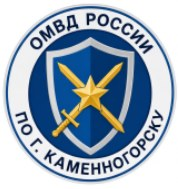
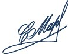
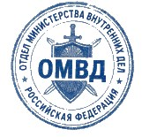
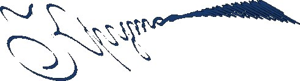

г. Каменногорск · 16.07.2024 г. · свидетель
| Допрос начат в 14:20 | Допрос окончен в 15:05 |
| Фамилия, имя, отчество | Селезнёв Марк Олегович |
|---|---|
| Дата рождения | 22.04.1999 (25 лет) |
| Место жительства / телефон | г. Каменногорск, ул. Заречная, 11 · +7******18-29 |
| Место работы | турклуб «Седой Хребет» |
| Семейное положение | не женат |

Вопрос: Назовитесь, скажите, чем занимаетесь.
— Селезнёв Марк Олегович. Работаю в турклубе «Седой Хребет». В основном в офисе бумаги заполняю. Принимаю членские взносы. Вот так примерно. В горы я не хожу, т.к. не люблю походы.
Вопрос: Какие у вас были отношения с жертвой?
— Мы дружили. У неё же был молодой человек Кольцов Артём. Он тоже у нас в турклубе работает. Спортсмен и гордость клуба, на турнирах часто представлет наш клуб. Чесно говоря, у Киры тяжёлый характер был. Любила поскандалить и мозги повыносить не только своему парню, но и всем в нашем турклубе. Я рад, что наши отношения ограничивались только рабочими.
Вопрос: У Киры мы нашли заявление о нарушении учёта денежных средств?
— Она помогала мне вести учёт финансов, но в бухгалтерии она ничего не понимает. Учёт у нас сложный и ошибиться можно легко. Напутала цифры и подумала, что я что-то там скрыл во взносах.
Вопрос: Где вы были в ночь с двадцать четвёртого на двадцать пятое?
— Дома был. Сидел в квартире, один.
Вопрос: Кто, по вашему мнению, мог это сделать?
— Кольцов, кто ж ещё. Они постоянно ссорились и спорили. Часто до криков и рукоприкладства. Я дома был в ночь ее убийства. На диване сидел, чай пил да в окно глядел. И всё, точка.
Показания с моих слов записаны верно, мною прочитаны. Замечаний к протоколу не имею.

